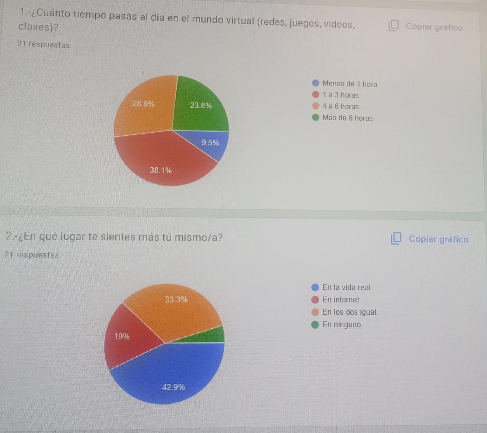
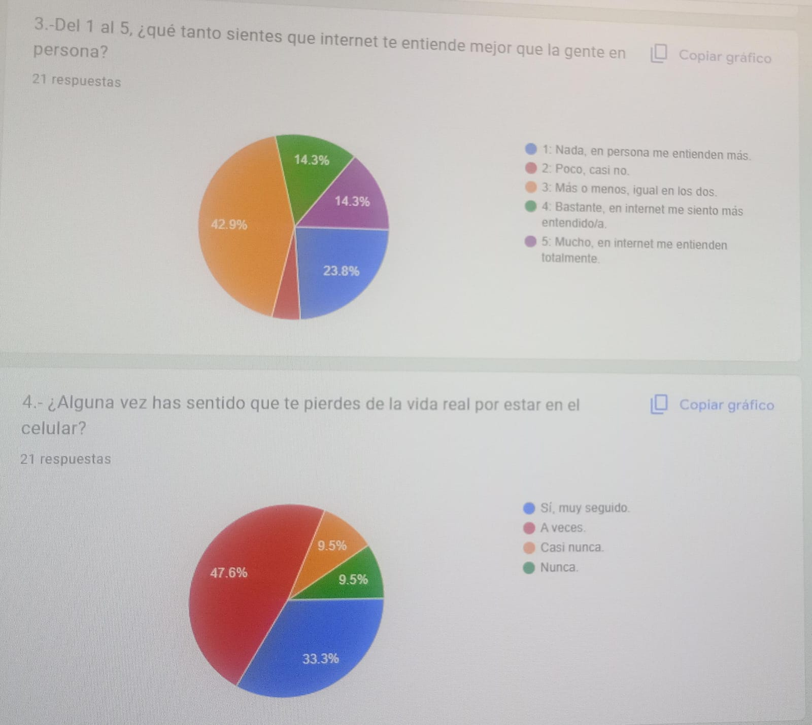
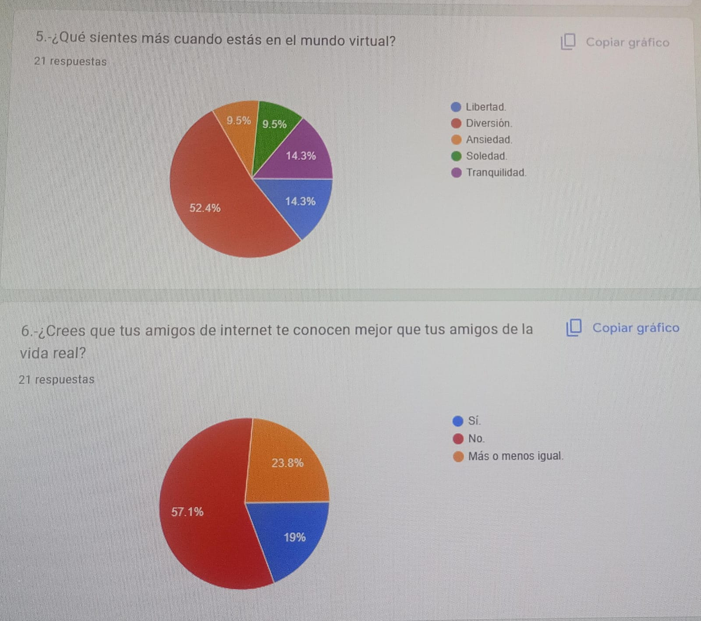
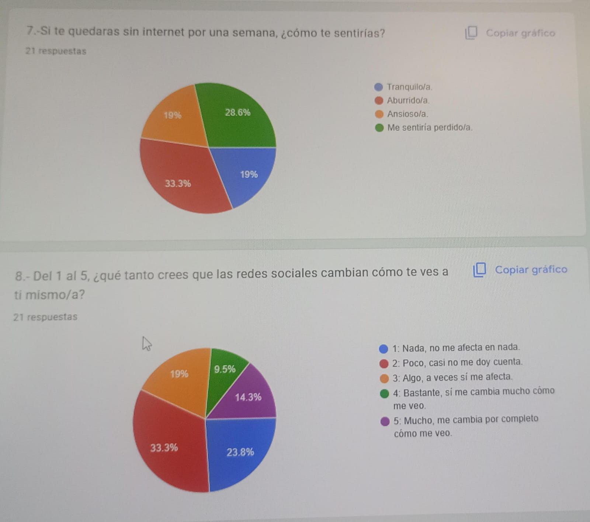
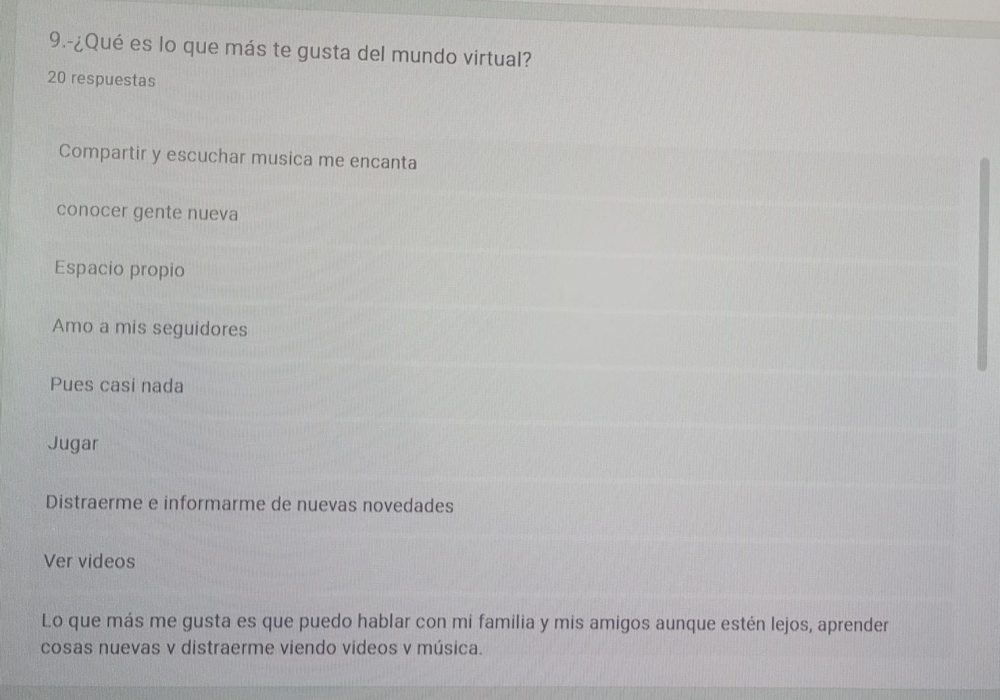

Descripción del programa
El ABC de las emociones es una Estrategia Nacional de Salud Mental del Gobierno de México impulsada principalmente por la Secretaría de Educación Pública (SEP) en conjunto con dependencias como la Secretaría de Salud y CONASAMA. Su objetivo es fortalecer el bienestar socioemocional y prevenir riesgos psicosociales en jóvenes de tercero de secundaria y bachillerato (de 14 a 15 años).

Encuesta
Esta parte demuestra el alto nivel de exposición digital que tienen los jóvenes hoy en día: más de la mitad (52.4%) pasa 4 horas o más al día conectado (sumando el 28.6% de 4 a 6 horas y el 23.8% de más de 6 horas). Sin embargo, a pesar de pasar tanto tiempo en línea, la mayoría (42.9%) sigue sintiéndose más auténtica en la vida real, mientras que un 33.3% siente que es igual en ambos entornos, lo que muestra que lo digital aún no reemplaza por completo su identidad presencial.

Encuesta
Aquí se evidencia una alerta sobre la desconexión con el entorno físico. Aunque el 42.9% siente que lo entienden igual en ambos mundos y un 28.6% (sumando las opciones 4 y 5) siente mayor comprensión en internet, lo más llamativo es que el 80.9% de los encuestados admite haber sentido que se pierde de la vida real por estar en el celular (47.6% "a veces" y 33.3% "sí, muy seguido"). Esto confirma que el uso del teléfono interfiere directamente con sus experiencias cotidianas.

Encuesta
Los resultados muestran que los jóvenes utilizan el entorno digital principalmente como un espacio de entretenimiento, ya que la diversión (52.4%) es la emoción dominante, seguida por la libertad y la tranquilidad (14.3% cada una), aunque existe un 19% que experimenta emociones negativas como ansiedad (9.5%) o soledad (9.5%). Por otro lado, la mayoría (57.1%) afirma que sus amigos de internet no los conocen mejor que los de la vida real, reafirmando que los vínculos presenciales siguen teniendo mayor profundidad

Encuesta
Esta sección refleja una fuerte dependencia emocional y de hábito hacia la conectividad: solo el 19% se sentiría tranquilo sin internet, mientras que el resto experimentaría aburrimiento (33.3%), sensación de estar perdido (28.6%) o ansiedad (19%). Además, respecto a la autoestima, aunque la mayoría siente poco o nulo impacto en cómo se perciben, un 42.8% (sumando las opciones 3, 4 y 5) reconoce que las redes sociales sí llegan a cambiar en alguna medida la forma en que se ven a sí mismos.

Encuesta
Las respuestas demuestran que para los estudiantes el mundo virtual cumple tres funciones principales: socialización y conexión (hablar con familia o amigos lejanos y conocer gente nueva), entretenimiento (escuchar música, ver videos y jugar) y aprendizaje o espacio personal. Esto indica que valoran internet como una herramienta útil para expresarse y mantenerse comunicados.